I left Lisbon for Santarem, a city that, although it has several places of interest, I left with the feeling that it was not made for ordinary tourists. Santarem is the capital of one of the districts of Portugal, and one of the oldest cities in Portugal where remains from the 8th century BC have been found, very possibly from the Tartessian culture whose axis ran from Badajoz to Cádiz. From there its greatest importance would come in the Middle Ages and where it would lose strength in front of the capital. It is known for being the capital of the Portuguese Gothic for the quantity and quality of its religious buildings of that style during the 13th and 14th centuries.
As religious buildings apart from the cathedral we have the convent of Santa Clara, a 13th century building, where its church stands out, also in the Gothic style. The absence of a doorway on the façade further accentuates the bareness of the exterior. It is 72 meters long and ends in a large Gothic-style rose window. There are also frescoes from the 17th century.
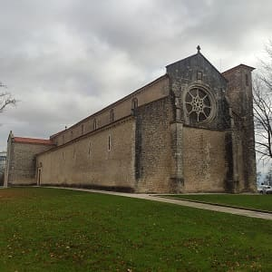
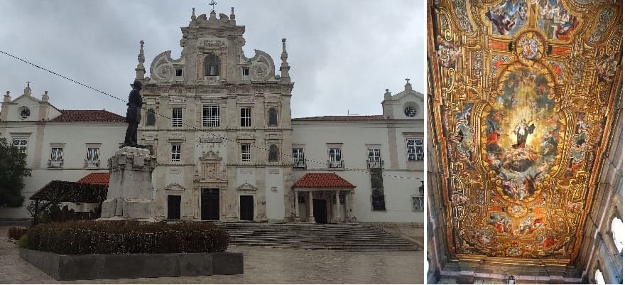
Another convent is that of Nuestra Señora del Sitio, and the convent of San Francisco, a 13th-century Gothic-style building that would be enlarged at different times from the 14th century and would carry the style of the date the gothic. In the 17th and 18th century decorative elements of Renaissance and Mannerist styles were incorporated, adding chapels to the church. In the 18th century, a congregation of monks would inhabit the convent, but a century later it would stop working and become part of the army building. For this reason I know it would deteriorate but in 2009 a strong restoration would begin. It has a large cloister with two floors in the Romanesque and Gothic styles with ornate capitals. In the church was the tomb of one of the oldest kings of Portugal, Fernando I.
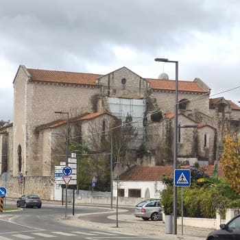
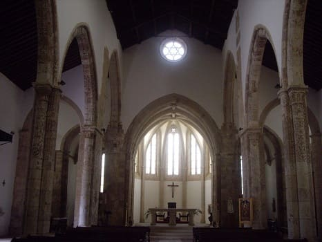
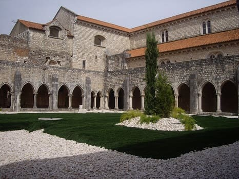
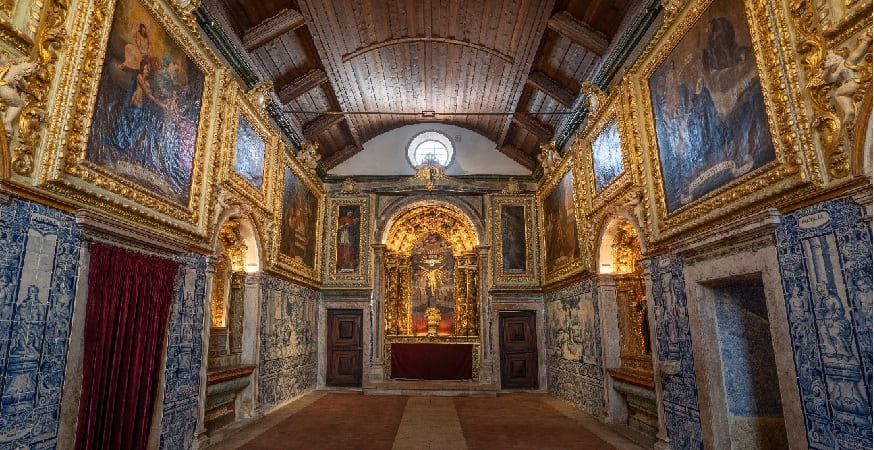
Another Gothic-style church is the church of Santa María de Gracia. This 14th century church, completed in the 15th century, has one of the most beautiful portals in the city of Portugal. In a flamboyant Gothic style, it tries to copy the prevailing style at that time, whose maximum exponent in Portugal is the Batalha monastery. Inside the church are the tomb and the remains of the discoverer of Brazil, Pedro Álvares Cabral, and his wife, and there is a statue outside.
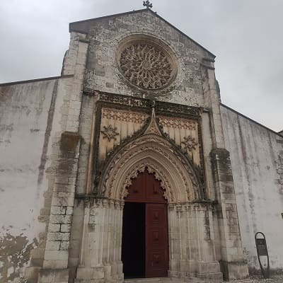
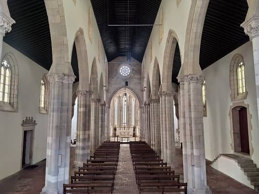
Another important church and one of the oldest the church of Santa María de la Maravilla, from the 12th century that was built by the Knights Templar. It is true that it would undergo changes in the 16th century, adapting to the churches of that time with the use of tiles as the protagonist. On the right the church of the Hospital de la Misericordia, Renaissance from the 16th century.
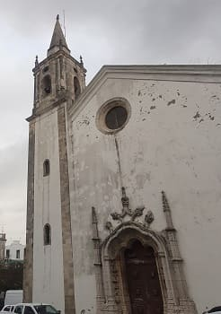
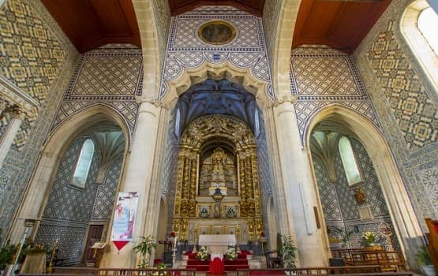
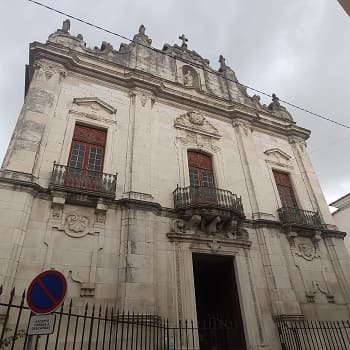
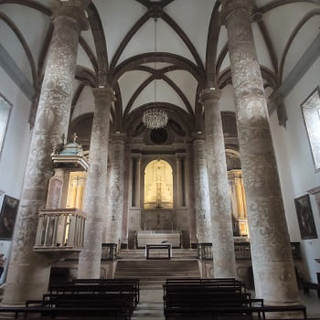
Other more modern churches are the church of La Piedad, and the chapel of Santa Iria , both from the end of the 17th century in a Renaissance style.
Finally, I would visit The Cathedral of Our Lady of the Conception or simply Santarém Cathedral is a Jesuit temple, dating from the 17th century, it was erected on the site where the royal palace of the Alcazaba Nova was, which it was abandoned since the time of King John II. Later, with the expulsion of the Jesuits from Portugal, by order of the Marquis of Pombal, the building began to house the Patriarchal Seminary after the donation of D. Maria I, and it remained so until the 20th century.
When the Diocese of Santarém was created in 1975, the church was elevated to the status of cathedral. The chapter house stands out with its ceiling painted with large frescoes and polychrome wood.
Other places of interest are the central market, in the photo, which contains a good collection of tiles with the theme of the country world, the Torre das Cabaças and the clock tower (old town hall).
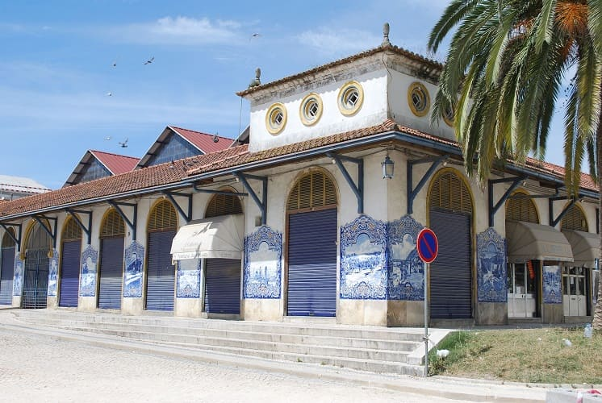
Then head north towards Óbidos.
Its name means fortified city and it is not for less since its wall is preserved in its entirety. This town is considered one of the most touristic in Portugal and it is due to the fact that it has a small but well-kept historic center.
The medieval wall of Óbidos can be explored on foot and is more than 1 km long. It does not have any railing so you have to be very careful. It also has a well-kept main square with the church and the town hall, as can be seen in the following image.
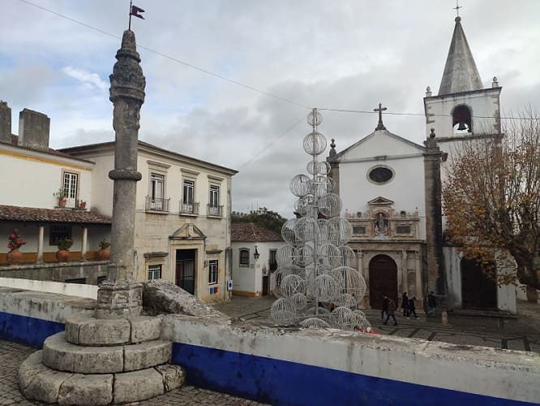
It also has two small churches that are perfectly preserved, such as the church of Santa María from the 13th century, built on top of an old mosque, and the church of San Pedro, from the XVIII, of less value for being rebuilt on the previous Gothic church.
Very close to this town there was an old Roman town and from it the aqueduct is preserved, which is already visible from the road.
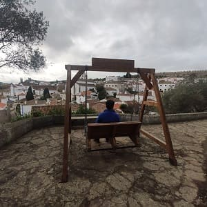
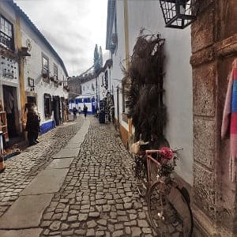
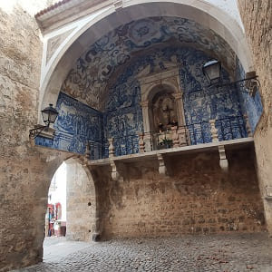
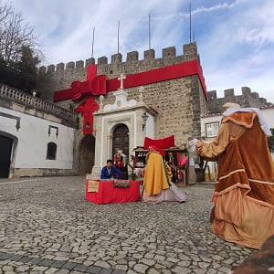
Finally, I would leave to see the three cities of the monasteries of Portugal. Alcobaça, Batalha and Tomar. To say that the visit to the 3 monasteries can be paid together at a very good price, 15 euros general and 7.5 reduced, which is what I pay for being a teacher. These monuments, in my opinion, together are the most historically and artistically important in Portugal. Adding that only the monastery of Batalha occupies the second place of sites most visited annually by tourists from Portugal, and the convent of Cristo de Tomar the fifth.
Firstly, I would go to Alcobaça where I would see the very wide square of the monastery, and inside I would check the breadth of its church.
The Monastery of Santa María was founded in 1153 by order of D. Afonso Henriques, the first king of Portugal, to fulfill a vow he had made to Saint Bernard after recovering Santarém from the Moors in 1147. After its construction, the king entrusted both the monastery and several surrounding farmlands to the Cistercian monks.
Its construction was erected in the year 1178, but the monks were not installed until 1223, when the monastery had already become one of the richest and most powerful in Portugal. It is believed that at that time 999 monks lived in the monastery, who celebrated masses in turns, without interruption.
What caught my attention the most was the tomb of the kings, Don Inés de Castro and Dom Pedro, who rest in the church, with a large number of details in their tombs, with reliefs referring to heaven and hell and the public life of Jesus
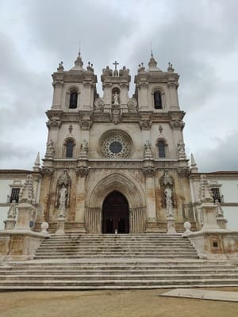
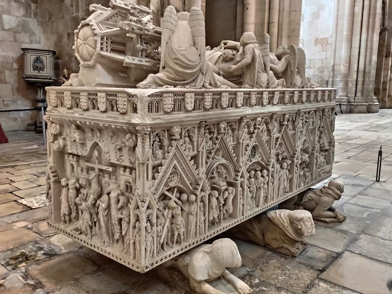
Also the chapter house with the staircase reminiscent of other Spanish monasteries of the Cistercian order. As can be seen in the image, the main altar is quite sober, without an altarpiece, very much in the sense of the austerity of the order.
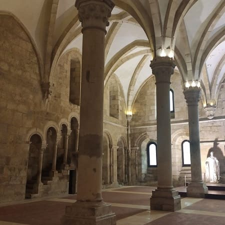
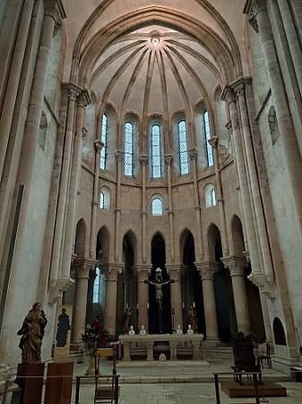
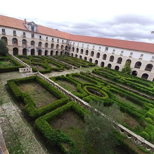
Also a room with miniatures of saints or kings that is also decorated with Portuguese tiles and its large cloister. Below are photographs of the dining room and the Cloister of Silence
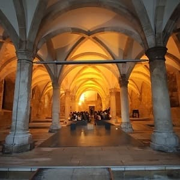
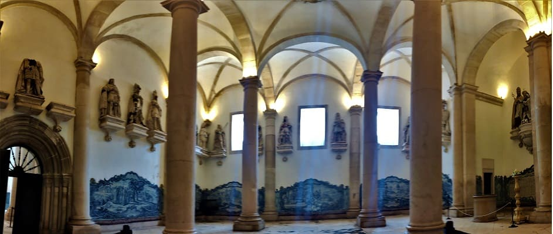
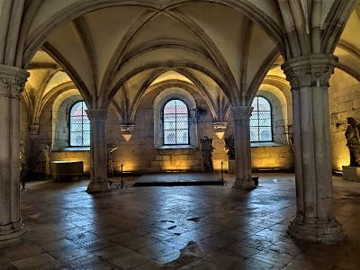
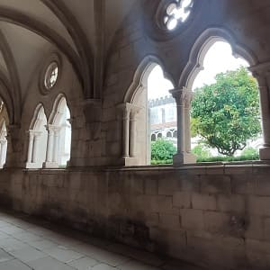
Finally, the most important room of the monastery, the room of the Kings, with numerous carvings of the kings of Portugal.
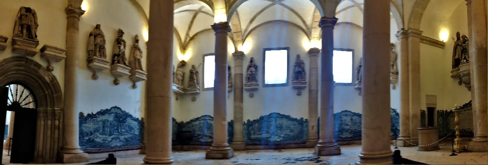

© 2016 - All Rights Reserved - Designed by Sergio López Martínez
El sitio se mantiene gracias a la publicidad, por favor Desactiva Adblock para seguir navegando
He desactivado Adblock![[Valid RSS]](https://www.onepointsync.com/wp-content/uploads/2016/08/valid-rss-rogers.png "Validate my RSS feed")